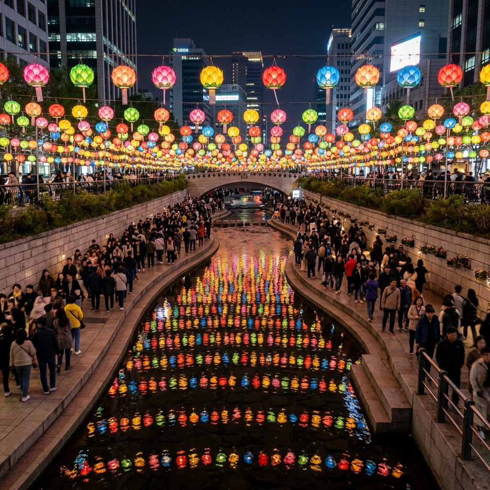
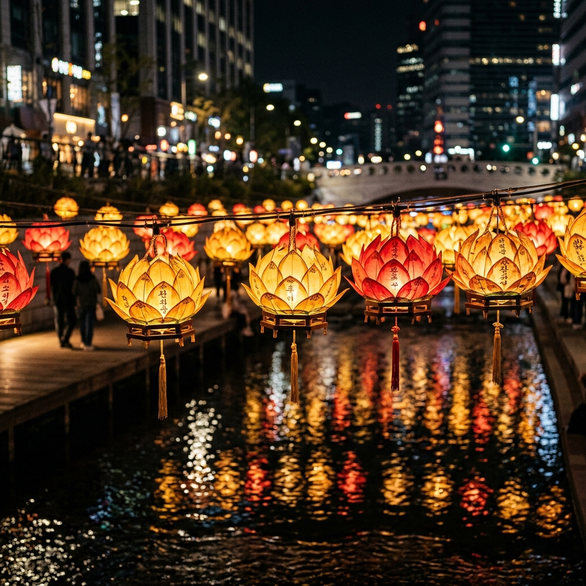
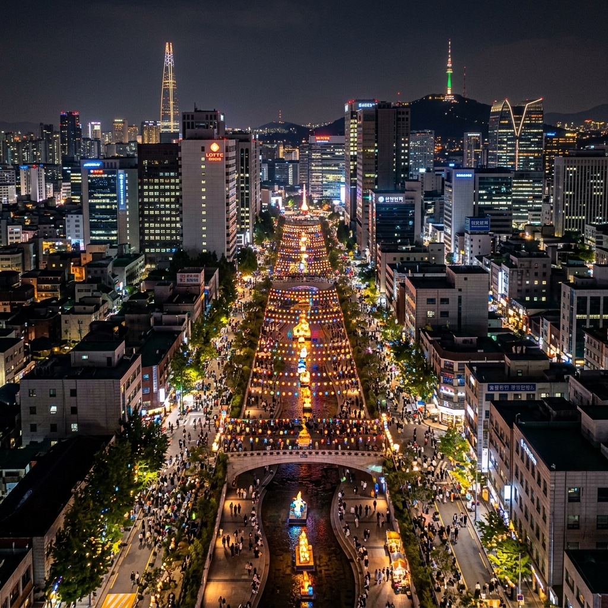

서울 청계천 연등축제 2026
부처님오신날 도심 연등 산책 완벽 가이드
5월 서울의 밤하늘을 수놓는 가장 아름다운 빛이 있습니다. 바로 청계천 연등 전시입니다. 매년 부처님오신날을 앞두고 서울 도심 한복판을 흐르는 청계천 위에 수천 개의 연등이 걸리면, 평범했던 도시 풍경이 한순간 환상의 빛의 강으로 변모합니다. 2026년 부처님오신날은 5월 24일(일)로, 그 전후 2주간 청계천 일대는 서울 최고의 야간 관광 명소로 탈바꿈합니다. 국적도, 종교도 관계없이 누구나 즐길 수 있는 이 빛의 축제를 지금 안내해 드리겠습니다.
🏮 청계천 연등 전시의 역사와 의미
청계천 연등 전시는 연등회의 공식 프로그램 중 하나로, 매년 부처님오신날을 전후하여 청계광장에서 수표교까지 약 1.2km 구간에 다채로운 형태의 연등이 설치됩니다. 단순한 전등 장식이 아니라, 전통 연등 제작 기술과 현대적 예술 감각이 결합된 살아있는 공공 예술 작품들입니다.
2021년 유네스코 인류무형문화유산으로 등재된 연등회는 천 년이 넘는 역사를 자랑합니다. 삼국시대부터 내려온 연등 문화는 조선 시대를 거쳐 현재까지 이어지며, 단순히 불교 행사를 넘어 온 국민이 함께하는 빛과 화합의 축제로 자리 잡았습니다.
청계천 연등 전시의 특별한 점은 불빛이 수면에 반사되어 하늘과 물 모두가 빛으로 가득 찬 이중의 아름다움을 경험할 수 있다는 것입니다. 연등의 색깔은 황금빛, 붉은빛, 파란빛, 초록빛 등 다양하며, 각 연등마다 제작자들의 기도와 소원이 담겨 있습니다.

[청계천 연등 전시 야경 전경] / AI 생성 이미지
📅 2026년 연등 전시 일정 및 운영 정보
2026년 청계천 연등 전시는 부처님오신날(5월 24일)을 중심으로 약 2주간 진행됩니다. 정확한 시작일과 종료일은 연등회 공식 홈페이지를 통해 확인하시는 것을 권장하지만, 일반적으로 부처님오신날 약 10일~2주 전부터 설치가 완료됩니다.
| 구분 | 내용 |
|---|
| 전시 장소 | 청계광장 ~ 수표교 (약 1.2km 구간) |
| 전시 기간 | 2026년 5월 중순 ~ 5월 27일경 |
| 점등 시간 | 일몰 ~ 오후 11시 |
| 입장료 | 무료 (누구나 자유롭게 관람) |
| 주요 연계 행사 | 청계광장 등 점등식, 연등회 퍼레이드(5월 23일) |
| 대중교통 | 지하철 1·2호선 시청역, 2호선 을지로입구역, 5호선 광화문역 |
연등 점등 시간은 해가 지는 시각부터 시작되어 밤 11시경까지 이어집니다. 5월 중순 이후 서울의 일몰 시각은 대략 오후 7시 20분~7시 30분대이므로, 오후 7시 30분 이후 방문하시면 연등이 가장 밝게 빛나는 시간대를 즐길 수 있습니다.
🌟 연등 전시 구간별 하이라이트
청계광장에서 수표교까지 이어지는 약 1.2km의 연등 전시 구간은 위치마다 다른 매력을 품고 있습니다. 구간별 포인트를 미리 파악하면 더욱 알차게 즐기실 수 있습니다.
① 청계광장 (출발점) — 전시 구간의 시작점이자 가장 규모가 큰 연등 조형물들이 설치되는 곳입니다. 매년 테마가 달라지는 대형 연등 조형물은 청계천 연등 전시의 대표 포토 스팟입니다. 모전교 부근의 넓은 공간에서 연등 전체를 한눈에 담을 수 있습니다.
② 광교 ~ 장통교 구간 — 양쪽 제방에서 다리 너머로 뻗어나가는 연등 줄기가 만드는 빛의 터널 구간입니다. 다리 위에서 하천을 향해 내려다보면 수면에 비친 연등과 실제 연등이 겹쳐지는 환상적인 장면을 촬영할 수 있습니다.
③ 관수교 ~ 수표교 (종착점) — 전통 연등 형태의 작품들이 집중적으로 전시되는 구간입니다. 불교 설화와 전통 이야기를 담은 스토리텔링형 연등 작품들이 늘어서 있어 교육적 가치도 높습니다.
전 구간을 처음 방문하시는 분이라면 청계광장에서 수표교까지 내려갔다가 반대편 제방으로 되돌아오는 왕복 코스를 추천합니다. 오가며 다른 각도에서 같은 연등을 감상할 수 있어 두 배의 즐거움을 누리실 수 있습니다.

[청계천 연등 근접 촬영 — 수면 반영] / AI 생성 이미지
📸 인생샷 명당 TOP 4
청계천 연등 전시는 어디서 찍어도 아름답지만, 특히 SNS에서 폭발적인 반응을 이끄는 포토 스팟 4곳을 소개합니다.
① 모전교 위 — 청계광장 바로 옆 첫 번째 다리. 이곳에서 하천 방향으로 촬영하면 양쪽 연등이 좁아지며 수렴하는 원근감 넘치는 사진이 완성됩니다. 스마트폰 기준으로도 와이드 각도로 촬영하시면 훌륭한 구도를 잡을 수 있습니다.
② 청계광장 대형 조형물 앞 — 매년 바뀌는 메인 연등 조형물 앞은 웨이팅이 생길 정도의 인기 포토존입니다. 방문 초반에 먼저 이곳에서 촬영하고 나머지 구간을 여유롭게 산책하는 전략을 추천드립니다.
③ 하천 보행로에서 위를 향해 — 청계천 물가에 내려서 연등이 머리 위로 펼쳐지는 구도로 촬영하면 마치 연등 안에 들어온 듯한 몰입감 있는 사진이 완성됩니다. 광각 렌즈나 스마트폰 초광각 카메라가 효과적입니다.
④ 장통교 위 야경 — 야간에 조명을 받은 청계천의 긴 연등 행렬이 지평선처럼 뻗어나가는 장면을 담을 수 있는 최적의 다리입니다. 삼각대를 활용한 장노출 촬영 시 환상적인 야경 사진을 얻을 수 있습니다.
🚇 교통 및 주변 즐길거리
청계천은 서울 도심 한가운데에 위치하여 대중교통 접근성이 매우 뛰어납니다.
🚇 지하철 이용 시
① 1·2호선 시청역 하차 후 청계광장 방향 도보 5분
② 2호선 을지로입구역 하차 후 청계천 방향 도보 3분
③ 5호선 광화문역 하차 후 청계광장 방향 도보 10분
🚗 자가용 이용 시
청계천 인근 주차장은 좁고 비쌉니다. 연등 전시 기간 주말에는 주변 교통이 매우 혼잡하므로 대중교통 이용을 강력히 권장합니다. 인근 공공 주차장(청계광장 지하 등)을 이용 시 조기 만차될 수 있습니다.
청계천 연등 산책을 마친 후 인근 명동, 종로, 광화문 광장으로 이어지는 야간 산책 코스를 추천합니다. 광화문 일대의 야경과 경복궁의 조명도 함께 즐기면 서울의 밤을 더욱 풍성하게 즐길 수 있습니다.
🍜 청계천 주변 야식 추천
연등 산책 후 허기를 달래기 좋은 청계천 주변 먹거리를 소개합니다.
광장시장 — 청계천에서 도보 10분 거리. 빈대떡, 마약김밥, 육회 등 서울 야시장의 정수를 맛볼 수 있는 곳입니다. 야간에도 활기차게 운영되므로 연등 산책 후 방문하기 좋습니다.
종로 피맛골 — 조선 시대부터 이어진 서민 먹자골목의 전통을 이은 종로 피맛골에서는 설렁탕, 순대국밥, 감자탕 등 구수한 한식을 즐길 수 있습니다. 5월 저녁 시원한 맥주 한 잔과 함께하면 최고입니다.
명동 거리 — 청계천에서 가까운 명동은 다양한 한식·분식·국제 음식점이 밀집해 있어 인원이 많은 그룹 방문 시 선택의 폭이 넓습니다. 한국 대표 길거리 음식도 이곳에서 모두 맛볼 수 있습니다.

[청계천 연등 야경과 서울 도심 야경] / AI 생성 이미지
🌙 연등 전시와 함께 즐기는 청계천 야간 산책 코스
청계천 연등 전시는 단독으로도 충분히 감동적이지만, 주변 명소와 연계하면 서울 최고의 야간 나들이 코스가 됩니다.
추천 코스 (2~3시간)
광화문광장 야경 감상 (30분) → 청계광장에서 연등 전시 시작 (20분) → 청계천 전 구간 산책 (40분) → 광장시장 야식 (30분) → 종로 야경 카페 (30분)
연등 전시 구간 산책은 체력 소모가 적고 평지이기 때문에 어린 아이, 어르신, 외국인 관광객 모두가 편안하게 즐길 수 있습니다. 특히 부모님과 함께하는 가족 나들이, 연인과의 야간 데이트, 해외에서 온 지인 안내 코스로 손색이 없습니다.
❓ 청계천 연등 전시 자주 묻는 질문
Q. 연등 전시 기간 동안 청계천 보행로는 혼잡한가요?
A. 주말 오후 8시~10시 사이 특히 혼잡합니다. 여유롭게 즐기려면 평일 방문이나 주말 오후 7시 전후 이른 시간대를 노리세요.
Q. 유모차와 휠체어 접근이 가능한가요?
A. 청계천 보행로는 계단 없이 평탄하게 설계되어 있어 유모차와 휠체어 모두 접근이 가능합니다. 청계광장에서 진입하는 경사로를 이용하세요.
Q. 비가 오면 연등을 볼 수 없나요?
A. 소나기나 가벼운 비에는 연등이 그대로 유지됩니다. 우산을 쓰고 방문해도 충분히 감상할 수 있으며, 비 오는 날 수면 반영이 더욱 아름다운 경우도 있습니다.
Q. 외국인 친구를 데려가도 좋을까요?
A. 매우 추천합니다. 청계천 연등은 한국의 전통 미감을 가장 쉽고 아름답게 접할 수 있는 공간입니다. 종교와 관계없이 누구나 즐길 수 있는 문화 축제입니다.
💡 방문 전 체크리스트
청계천 연등 전시를 완벽하게 즐기기 위한 체크리스트입니다.
✅ 카메라/스마트폰 충전 완료 — 야경 촬영이 많으므로 보조 배터리 지참을 권장합니다.
✅ 편한 신발 착용 — 1.2km 보행 코스이므로 힐이나 딱딱한 구두보다 운동화나 단화를 신으세요.
✅ 얇은 겉옷 준비 — 청계천 하천 바람이 불어 5월 저녁에도 쌀쌀할 수 있습니다.
✅ 현금 준비 — 주변 노점이나 광장시장 이용 시 현금이 편리합니다.
✅ 연등회 공식 앱 확인 — 행사 일정과 지도를 미리 확인하세요.
#청계천연등
#연등축제2026
#부처님오신날
#서울야간관광
#청계천야경
#서울여행
#연등회
#유네스코무형유산
#서울가볼만한곳
#도심나들이